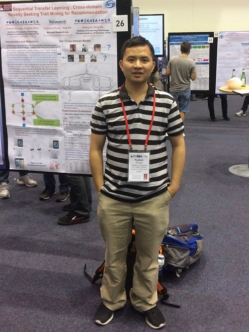

Fuzhen Zhuang (庄福振)
|
 |
I am currently an Associate Professor in Institute of Computing Technology, Chinese Academy of Sciences.
My research interests include Machine Learning and Data Mining, including Transfer Learning, Multi-task Learning, Multi-view Learning and Recommendation Systems.
I have published more than 100 papers in the prestigious refereed conferences and journals, such as SIAM SDM, ACM CIKM, IEEE ICDM, ACM WSDM, ECML/PKDD, EMNLP, IJCAI, AAAI, IEEE ICDE, WWW, IEEE TKDE, IEEE T-CYB, IEEE TNNLS, ACM TIST, Information Sciences, and Neural Networks.
Address: Kexueyuan Nanlu #6, Zhongguan Cun, Haidian District, Beijing.
Email: zhuangfz@ics.ict.ac.cn & zfz20081983@gmail.com
Tel: (86) 10-62600765
Motto: If you want to harvest, please try your best! Keep your heart passional, everything is possible!
|
News
Two papers have been accepted by TheWebConf 2020.
Yongchun Zhu, Dongbo Xi, Bowen Song, Fuzhen Zhuang*, Shuai Chen, Xi Gu and Qing He: Modeling Users' Behavior Sequences with Hierarchical Explainable Network for Cross-domain Fraud Detection. TheWebConf 2020.
Dongbo Xi, Fuzhen Zhuang*, Ganbin Zhou, Xiaohu Cheng, Fen Lin and Qing He: Domain Adaptation with Category Attention Network for Deep Sentiment Analysis. TheWebConf 2020.
One paper has been accepted by IEEE TKDE.
Jingwu Chen, Fuzhen Zhuang*, Tianxin Wang, Leyu Lin, Feng Xia, Lihuan Du, Qing He: Follow the Title then Read the Article: Click-guide Network for Dwell Time Prediction. IEEE TKDE 2019.
One paper has been accepted by AAAI 2020.
Zhao Zhang, Fuzhen Zhuang*, Hengshu Zhu, Zhiping Shi, Hui Xiong, Qing He: Relational Graph Neural Network with Hierarchical Attention for Knowledge Graph Completion. AAAI 2020.
Research Interests
Machine Learning
Data Mining
Transfer Learning
Multi-task Learning
Multi-view Learning
Recommender Systems.
Professional Experience
Associate Professor. Institute of Computing Technology Chinese Academy of Sciences, Sep 2013 - Present.
Technical Consultant. Baidu Inc., Sep 2016 - Feb 2017.
Visiting Scholar. Microsoft Research Asia, Apr 2015 - Oct 2015.
Assistant Professor. Institute of Computing Technology, CAS, Jul 2011 - Sep 2013.
Visiting Student. University of Minnesota Twin Cities (UMN), Sep 2010 - Mar 2011.
Visiting Internship Student. Hong Kong University of Science and Technology (HKUST), Jul 2010 - Aug 2010.
Education
Ph.D. in Computer Science. Institute of Computing Technology, Chinese Academy of Sciences, July, 2011.
B.E. in Computer Science. Chongqing University (CQU), 2006.
Honors and Award
Dec. 2019 Excellent researcher in Institute of Computing Technology, CAS
Jan. 2017 The Youth Innovation Promotion Association of Chinese Academy of Sciences
Jan. 2016 The outstanding researcher in Institute of Computing Technology, CAS
Dec. 2012-2015 Excellent researcher in Institute of Computing Technology, CAS (one time per year)
Jul. 2015 The Champion of IJCAI 2015 Data Mining Competition (1/753)
Oct. 2013 Best Doctoral Dissertation Award, Chinese Association for Artificial Intelligence
Dec. 2011 Outstanding Graduate Student, Graduate University of Chinese Academy of Sciences
Oct. 2010 Best Paper Candidate & Student Travel Award, ACM CIKM 2010
Apr. 2010 Best Paper Candidate, SIAM SDM 2010
Jun. 2007-2010 Excellent Student, Chinese Academy of Sciences (one time per year)
Jan. 2009 Xia Peisu Scholarship, Institute of Computing Technology
Jul. 2006 Excellent Graduate Student, ChongQing City (top 0.5%)
Research Grants
Principal Investigator, “The Youth Innovation Promotion Association CAS 2017146”, Chinese Academy of Sciences, 800,000RMB, 2017.1 - 2020.12.
Principal Investigator, “The Research on Multi-task Multi-view Learning Algorithms to Heterogeneous Environment”, the National Natural Science Foundation of China, 780,000RMB, 2015.1 - 2018.12.
Principal Investigator, “The Application of Machine Learning Algorithm in Operator Big Data”, ZTE, 200,000RMB, 2017.1 - 2017.12.
Principal Investigator, “2015 Microsoft Research Asia Collaborative Research Program”, MSRA, 100,000RMB, 2016.1 - 2016.12.
Principal Investigator, “The Research on Knowledge Constructing Methods based on Web Data”, Baidu Inc., 100,000RMB, 2016.1 - 2016.12.
Principal Investigator, “The Research of Transfer Learning Algorithms based on Generative Model with Applications”, the National Natural Science Foundation of China, 240,000RMB, 2013.1 - 2015.12.
Principal Investigator in ICT, “Research and Development of Public Service Support Technology in Urban Population Life Cycle”, National High-tech R&D Program of China (863 Program), 713,600RMB, 2013.1 - 2015.12.
Principal Investigator, “The Develop of Parallel Data Mining System”, Key Lab of Web Data in ICT, 300,000RMB, 2011.8 - 2012.7.
|